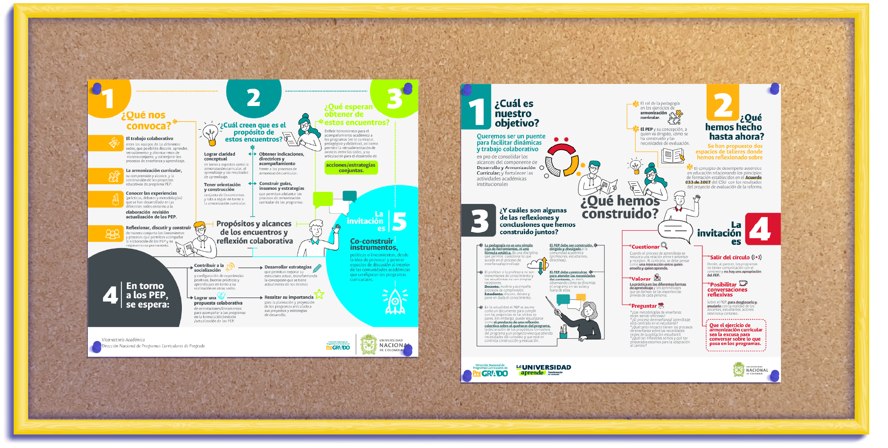
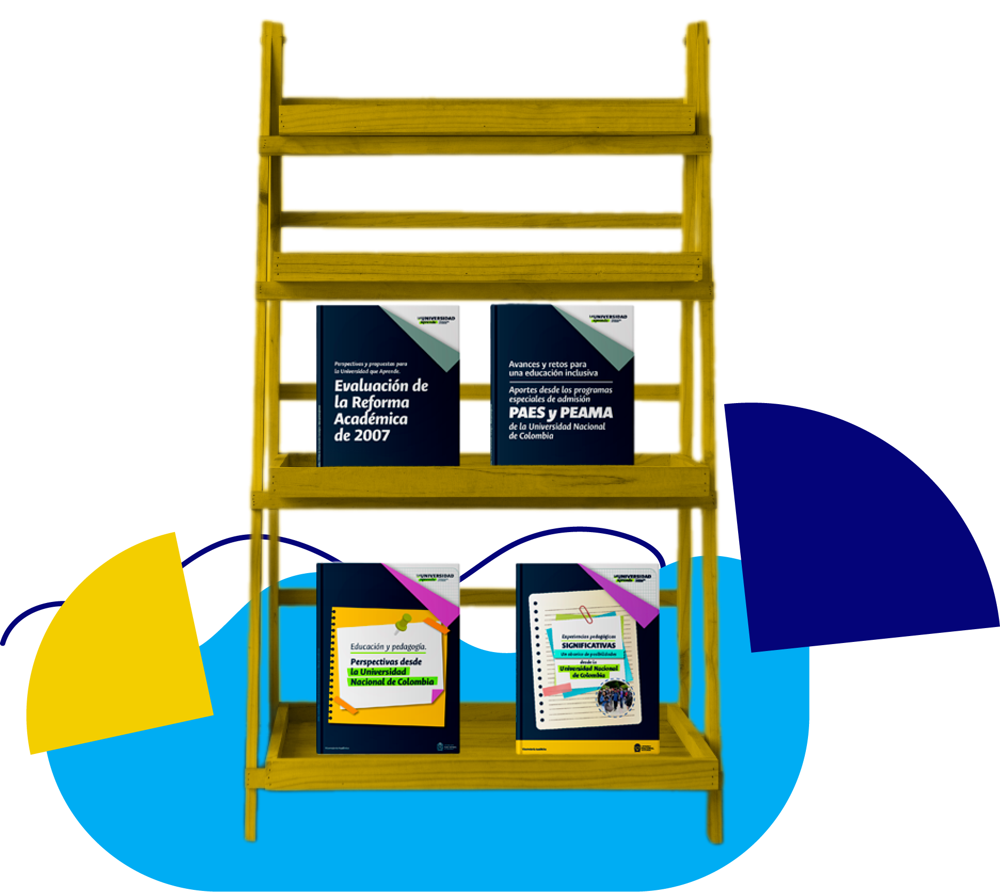

Desde octubre de 2022 y hasta mayo de 2023, se llevaron a cabo diversos espacios de trabajo colaborativo, talleres y reflexiones conjuntas entre docentes, direcciones académicas y el equipo nacional de armonización curricular. Este proceso contó con la participación de los equipos de las sedes de la Universidad Nacional de Colombia, lo cual propició la participación activa de las diferentes facultades y programas. El objetivo principal fue coconstruir las orientaciones para actualizar los PEP de los programas curriculares, entendiendo tanto las necesidades actuales de los programas como las particularidades en cada una de las sedes.
Es importante tener en cuenta que estas orientaciones también se encuentran enmarcadas en el sistema de aseguramiento de la calidad de la educación superior y en el Acuerdo 033 de 2007, que es el documento en el que se estipulan los lineamientos académicos de la Universidad Nacional de Colombia. Otro referente fundamental fue el análisis de los resultados de la Evaluación de la Reforma Académica de 2007, proceso adelantado entre 2019 y 2022. Esos fueron los principales referentes de los que partimos.
- Acompañar las rutas y trayectorias trazadas por las diferentes sedes, en cabeza de las direcciones académicas, en torno a la armonización curricular de los programas y aportar a ellas.
- Contribuir de forma permanente a los procesos de autoevaluación y mejoramiento de la calidad de los programas curriculares.
- Posibilitar la difusión de la propuesta académica de cada programa entre la comunidad estudiantil, profesoral, administrativa, de egresados y egresadas, aspirantes y otros grupos de interés.
- Promover la concordancia del PEP con el Proyecto Educativo Institucional —conocido como PEI— y la misión y visión institucional, a través de una reflexión sobre las apuestas formativas del programa y su posición en relación con los fines de la Universidad Nacional de Colombia.
- Concepción sobre la enseñanza y el aprendizaje
- Desempeño auténtico
- Armonización curricular con enfoque territorial, educación inclusiva e internacionalización
Estos encuentros propiciaron el trabajo colaborativo entre los equipos de las diferentes sedes para entablar diálogos y fomentar aprendizajes mutuos, así como para afrontar retos de manera conjunta. Dichos espacios también permitieron incentivar la comprensión sobre el alcance de la armonización curricular en la Universidad Nacional de Colombia y entablar la discusión colectiva sobre los lineamientos y los procesos asociados con la elaboración de los PEP y su mejoramiento permanente.
Así pues, a través de estos encuentros, se logró, en primer lugar, dar claridad conceptual en torno a la armonización curricular y sus diferentes componentes. En segundo lugar, brindar directrices para el acompañamiento. En tercer lugar, construir conjuntamente las orientaciones para el PEP y los lineamientos para las rutas de armonización curricular. Finalmente, esos espacios permitieron avanzar en la construcción de una caja de herramientas que contiene insumos para adelantar los procesos de armonización curricular de los programas.